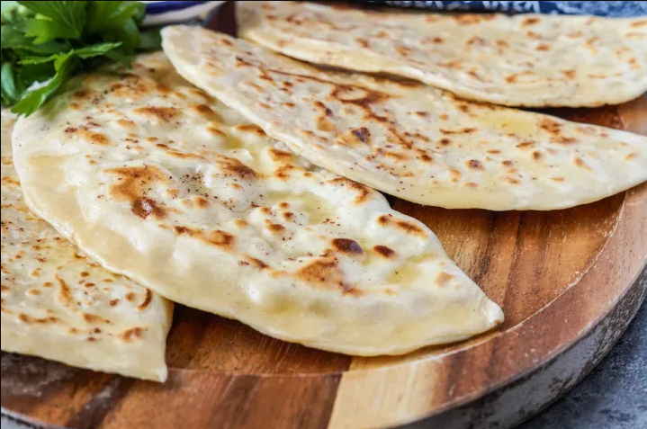

Description
Qutab is a dish from Western Asia, made from thinly rolled dough that is filled and fried. There are different variations across Asia and Africa. Similar to dishes known as chebureki, gözleme, stuffed roti, parantha and msemen maamer.
The dough is rolled into a thin circular layer and the middle of each circle filled with stuffing before finally being folded into a crescent shape. The resulting patties are griddled on both sides and served by pouring over butter on top. Qutab is usually served with yoghurt with green coriander, fennel and sumac.
Ingredients
Dough
- 2 cups wheat flour
- 1 teaspoon salt
- 1 teaspoon oil
- 1,5-2 cups water
Filling
- 1/4 green onion
- 1/4 parsley
- 1/4 coriander
- 1/4 mint
- (crubled hard cheese optional)
- salt
- pepper
- butter
- sumak
- pomegranate
Steps
- Combine ingredients for the dough, knead and let the dough rest for 30mins. Make sure the dough does not get dry.
- Cut all ingredients for the filling roughly. Add salt and pepper. Mix into it crumbled cheese of your choice, like feta.
- Divide the dough in 4 pieces and roll the dough into a flat circle with some flour, so it does not stick.
- Fill half of it with the filling and close it well on the edges, by pressing them.
- Fry it in a pan on medium heat, until both sides are brown.
- Top it with some butter, sumak and pomgranate when done.
- Enjoy!